바로 어제까지 비오고 바람불고 넘추워서
"6월에 나 아직도 가을자켓 입고있어
작년에는 안이랬잖아
올해 6월 왜이래~~!!!" 라고 외쳤는데
오늘 갑자기 30도ㅡㅡ;; 여름날씨;;;
박스에 둘러쌓여서 최소 짐만 꺼내놓고 한달사는동안
오~이거 그래도 뭐 지를생각이 안드는건 촘 좋은데?
라고 생각했는데 저거 딱 3주가더라 OTL
그래도 우선 다시 짐을 싸야한다는 생각에
가벼운 티셔츠나 여름되면 꼭 찾아오는 네일지름 등등;;
깨알같이 질렀음;;;
이제 방도 대충 정리되었겠다
날씨도 좋겠다 마실댕겨왔다♬
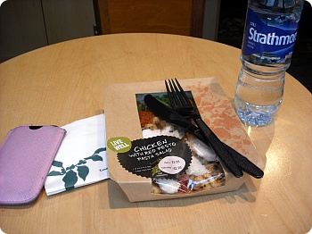
요즘 나의 주식
스타벅스 샐러스 + 물
점심메뉴로 매우 사랑받고있음^^;;;;
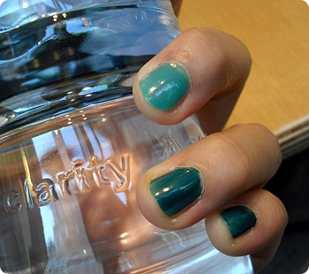
초록색 계열 처음도전
나름 맘에들었음///
진한 초록색은 nails inc / 밝은색은 ORLY
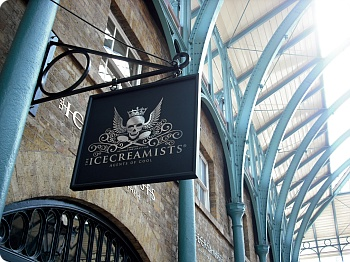
코벤트가든 내 새로생긴 아슈크림 가게
ICECREAMISTS
여기 서빙하는분들 유니폼이 넘 내취향////
아이스크림가게를 무슨 칵테일바처럼 꾸며놨음
음악도 가게내부도 일하시는분들도 다 내취향///////
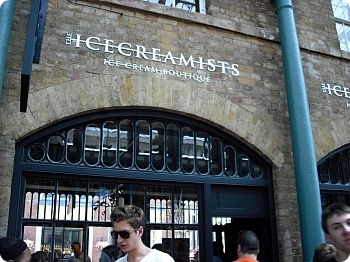
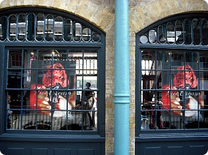
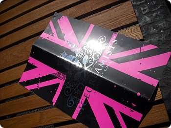
메뉴판 디자인봐//
핫핑크/////므헤헤헤헤 (←;;;;)
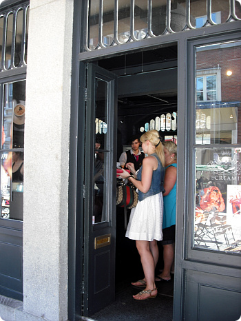
이날은 사람이 너무많이 기다려서 포기OTL
사진만 찍고 이동
내셔널갤러리에서 구경좀 하다 엽서좀 사구
차이나타운으로 이동
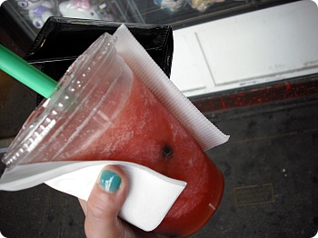
차이나타운에서 버블티파는 가게 발견
만세 ㅜㅜ
낼름 하나 주문
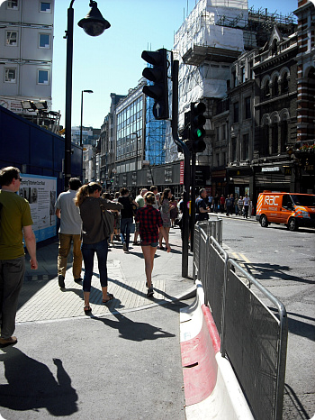
버블티 마시면서 토튼햄코트로드 지나서 옥스포드서커스 쪽으로
(바꿔말하면 시간날때 혼자 맨날 하던짓 반복중;;
런던 센트럴 어슬렁거리기;;;;)
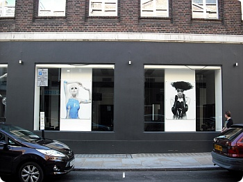
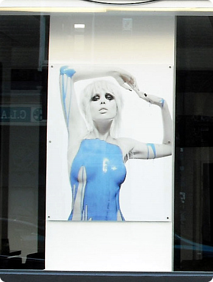
리젠트 스트릿쪽에 사람이 너무많고 더워서
리버티에서 뒷골목쪽으로 빠졌다가 발견한 사진
오우///내취향내취향// 맘에들오+_+
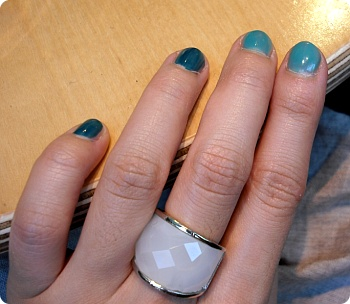
악세서리 알레르기가 너무심해서
거의 포기하고 사는편인데;;; (소싯적 귀를 5개나 뚫었건만!!!! 흑흑)
그나마 반지는 괜찮은편이라
가끔 생각날때마다 하나씩 집어오고있다^^;;
전에 ALDO에서 구입한거
흰색이 시원하니 맘에들어서 충동구매
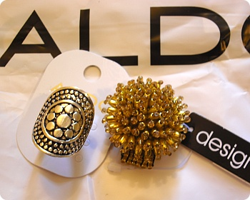
그리고 오늘 또 하나 낼름
ALDO에서 산 반지하나랑
내셔널갤러리에서 산 나름 해바라기반지.........일려나??
고흐 관련 굿즈코너에 있었으니까 그렇다고 믿는다;;;;
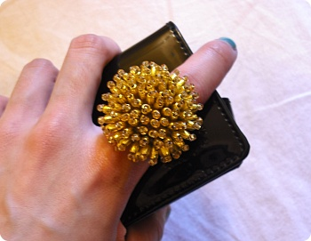
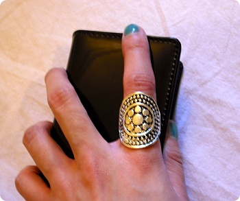
끼면 요래요래~
ALDO에서 산건 살짝크다;;
그렇다고 XS사이즈를 사자니
네번쨰손가락은 널널한데 두번째손가락은 넘 꽉맞고;; 에잇;;;
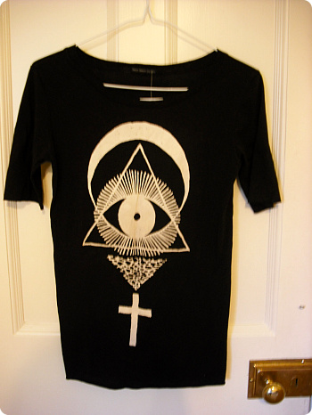
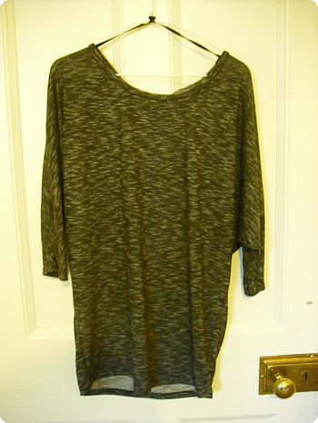
요 두개는 urbanoutfitters 들어갔다가 충동구매한 상의두벌;;
(그리고 변하지 않는 취향 ㅋㅋㅋㅋㅋ)
정신차려보니 50파운드가 순식간에 사라졌..........;;;;
2주 내내 날씨가 넘 암울했었는데
그래두 드디어 여름이 온거같아 기쁘네요//ㅂ//
내일부터 또 일주일 힘차게 로동인겝니다//